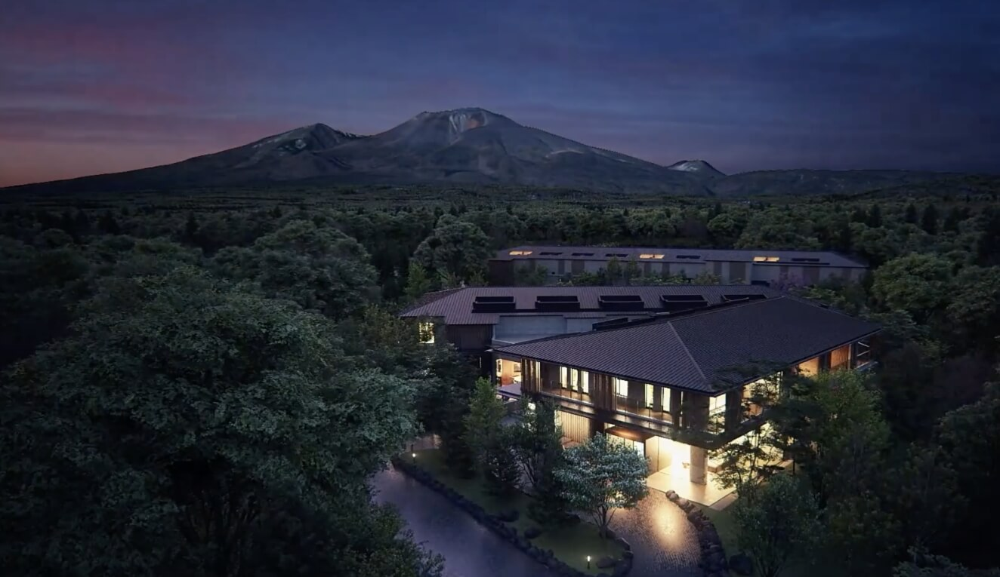
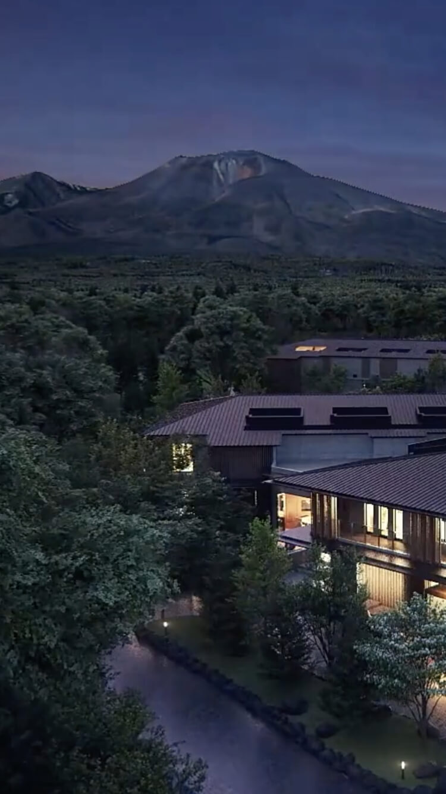
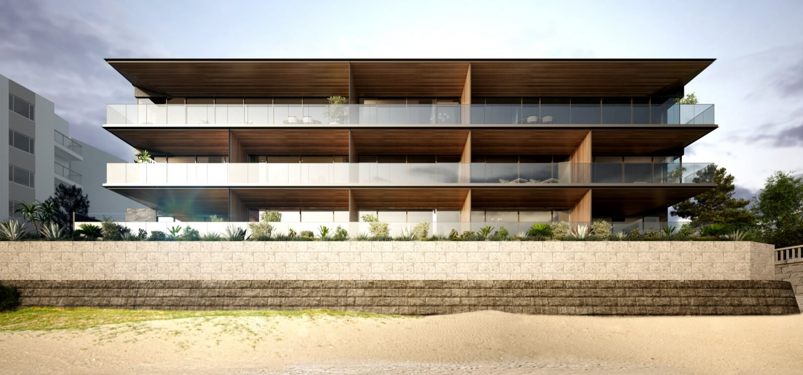
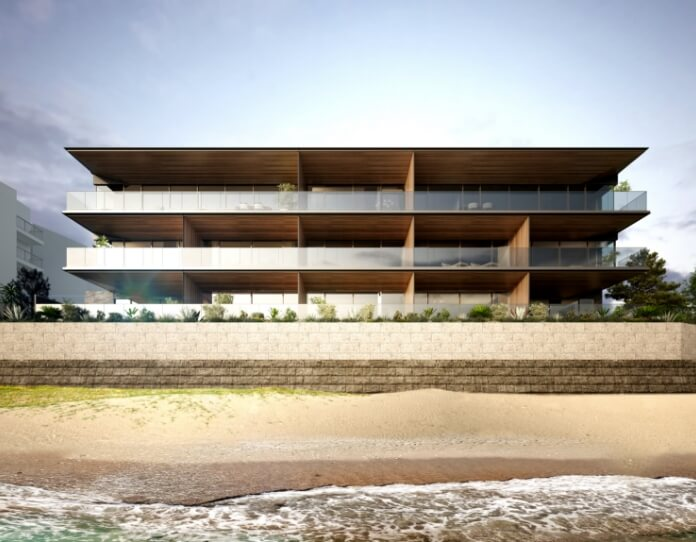
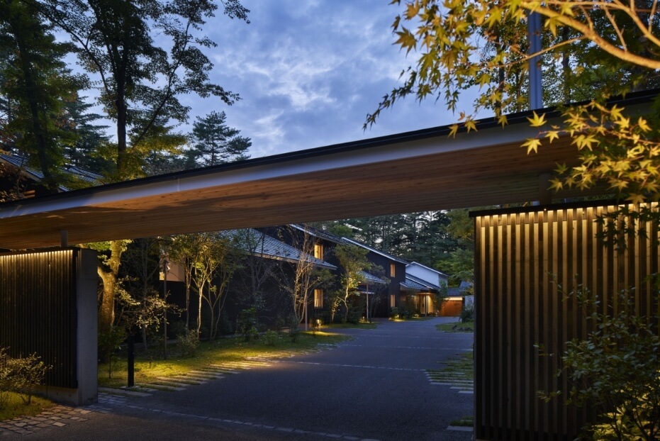
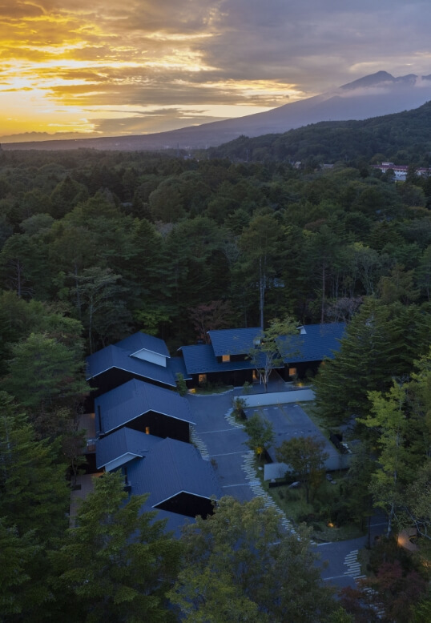
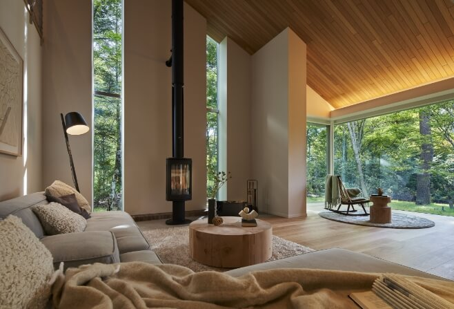
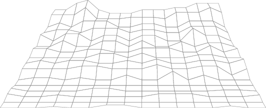

この国の技術を未来へ継承し、
次世代の暮らしに新たな価値を。
Heritage and the spirit of Craftsmanship
NEWS & TOPICS
NEW RELEASES
次代まで輝き続けるために。私たちは、挑戦する。
日本エスコンの新規取得事業用地の情報。
人生を彩るステージへ
Escon Japan is a life developer that strives for
ideal housing and lives. we create a wonderful Japanese future through
an ideal living place in an ideal city.



私たち日本エスコンは
次世代に新たな美意識を
Craftsmanshipとして想像し継承する。
IDEAL to REAL
時に流されず、
色褪せないCraftsmanshipが、
あなたの人生を輝かせる。


私たちのつくるものに、
ひとつとして、同じ家はない。
住まう人の幸せを思い描き、その歓びが、
次代まで輝き続けるために。私たちは、挑戦する。
一人ひとりの個性でつくる、
本物のプレステージへ。

-

-

日本エスコンのフィロソフィー
継承される5つの真髄
日本エスコンのブランドコンセプト実現のために
継承される5つの真髄。
それは、心に響く価値を生み出し、
日常を特別に彩る力です。
私たちが大切にしているこの5つの要素は、
すべての住まいに魂を込め、
生活の質を高めるための原動力です。
継承される5つの真髄に共鳴するクラフトマン達
日本エスコンが共鳴する
クラフトマンたちをご紹介します。

軽井沢安東美術館 代表理事
安東 泰志ANDO YASUSHI
本物を見抜く批評眼
芸術を通じて魂の救済を願う場所
「軽井沢安東美術館」。
藤田嗣治の美術館で得る癒しと力

READ MORE
一彫堂
四代目
堀川 正久HORIKAWA MASAHISA
五代目
堀川 真太郎HORIKAWA SHINTARO
ものづくりの精巧な技術
西洋家具の形式に
日本古来の技法を融和した
軽井沢彫の匠
※掲載のクラフトマンの映像は、2024年8月に撮影したものです。